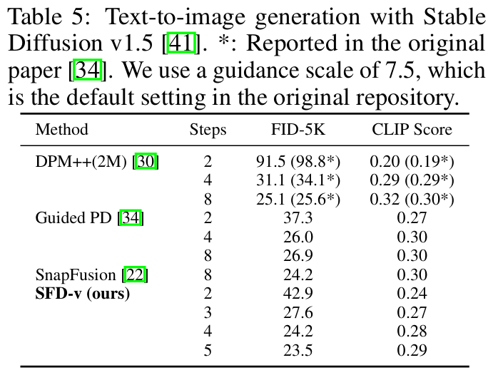

全文翻译
摘要
基于扩散的生成模型在各种任务中展现出了强大的性能，但其代价是采样速度缓慢。为了实现高效且高质量的合成，最近开发了各种基于蒸馏的加速采样方法。然而，这些方法通常需要通过精心设计进行耗时的微调，才能在特定的函数评估次数（NFE）下取得令人满意的性能，这使得它们在实际应用中难以使用。为了解决这个问题，我们提出了扩散模型的简单快速蒸馏（SFD）方法，它简化了现有方法中使用的范式，并将微调时间大幅缩短了1000倍。我们从一种基于普通蒸馏的采样方法开始，通过识别和解决几个影响合成效率和质量的微小但关键的因素，将其性能提升到了最先进的水平。我们的方法还可以使用单个蒸馏模型实现可变NFE的采样。大量实验表明，SFD在少步图像生成任务中，在样本质量和微调成本之间取得了良好的平衡。例如，SFD在CIFAR-10上仅用单个NVIDIA A100 GPU进行0.64小时的微调，就实现了4.53的FID（NFE=2）。我们的代码可在https://github.com/zju-pi/diff-sampler获取。
引言
近年来，扩散模型因其在图像 [41,44,42]、视频 [14,2]、音频 [20,24] 和分子结构 [54] 等各个领域卓越的生成能力而备受关注。这些模型通过迭代去噪步骤，将带噪声的输入逐步转换为逼真的输出。与其他生成模型 [9,19] 相比，扩散模型因其高质量的合成效果、稳定的训练过程以及基于随机微分方程 [51] 的坚实理论基础而受到青睐。然而，使用扩散模型实现高质量合成通常需要数百到数千次采样步骤，导致采样速度缓慢，这对实际应用构成了重大挑战。
近年来，在加速扩散模型采样方面取得了显著进展 [48,30,58,60,8,38,63,4,31,45,34,50,17,52,7]。这些方法通常分为两类：基于求解器的方法和基于蒸馏的方法。基于求解器的方法 [48,30,58,16,60,8,38,63,4] 将扩散模型的采样视为求解微分方程，并采用快速数值求解器来加速高质量合成。然而，这些方法受到固有截断误差的限制，当函数评估次数（NFE）相对较少（例如 NFE≤5）时，样本质量会下降。另一方面，基于蒸馏的方法保留了原始（教师）扩散模型的结构，但旨在创建一个简化的（学生）模型，以简化扩散模型的迭代优化过程 [31,45,34,50,17,52,7]。极端的基于蒸馏的方法甚至在隐式数据分布和预先指定的噪声分布之间建立了直接的一一映射 [31,27,50,10,56]。尽管基于蒸馏的方法已展示出令人印象深刻的结果，并且在总 NFE 预算小于 5 的情况下，采样质量通常优于基于求解器的方法，但它们需要昂贵的计算资源来微调预训练的扩散模型。如图1 所示，必要的时间通常超过一百个 GPU 小时，甚至达到从头开始训练扩散模型所需的数量级。我们将耗时的微调过程归因于以下两个因素：
- 微调与采样步骤之间的不匹配。由于步骤不匹配，现有基于蒸馏的方法中往往存在显著的微调成本，而这些成本并不能有效提升最终性能。例如，渐进式蒸馏 [45,34,1] 在数千个时间戳上微调扩散模型，但采样时仅使用几个步骤（例如 8 步或更少）。此外，基于一致性的蒸馏 [50] 将大部分微调工作用于确保一致性属性 [5]，但采样时仅使用 1 或 2 步。这种不一致性在微调过程中浪费了过多的精力。
- 复杂的优化目标。基于蒸馏的方法的优化目标变得越来越复杂，包括使用 LPIPS [59,50,17,56]、对抗训练 [46,17] 以及各种正则化项 [17,56]。尽管结果有所改善，但这些额外组件使微调过程复杂化。
| 图 1：扩散模型加速方法的比较。为了更好地可视化，时间轴通过在实际所需时间上增加一小时来偏移。请注意，在这种情况下从头开始训练扩散模型大约需要 200 小时。我们的方法以较小的微调成本实现了良好的性能。 |
在本文中，我们介绍了扩散模型的简单快速蒸馏（SFD）方法，旨在以最小的微调成本在少数采样步骤中实现扩散模型的快速高质量合成。从基于蒸馏的方法的通用框架出发，我们通过仅微调将在采样中使用的少量时间戳来解决步骤不匹配问题，这显著提高了微调效率。这一策略的有效性基于关键观察：在特定时间戳上的微调可以对其他时间戳的梯度方向产生积极影响（第 3.1 节）。然后，我们将 SFD 作为扩散模型蒸馏的简化范式引入，其中学生模型学习模仿教师的采样轨迹，同时最小化累积误差。我们通过识别和解决几个影响性能的微小但关键的因素，释放了这个简单框架的潜力（第 3.2 节）。此外，我们提出了该方法的可变 NFE 版本，称为 SFD-v，通过向模型引入步骤条件，使单个蒸馏模型能够实现各种步骤的采样（第 3.3 节）。
使用 2 NFE，我们的 SFD 在 CIFAR-10 [21] 上实现了 4.53 的 FID，在单个 NVIDIA A100 GPU 上的训练成本仅为 0.64 小时，这比需要约 1156 小时的一致性蒸馏快 1000 倍（见图 1）。在包括 ImageNet 64×64 [43]、Bedroom 256×256 [57] 和使用 Stable Diffusion [41] 的图像生成在内的额外数据集上的定量和定性结果，证明了我们方法的有效性和效率。
2 预备知识
2.1 扩散模型
扩散模型通过逐步向数据添加高斯白噪声，然后从纯噪声中迭代重建原始数据，从而在隐式数据分布 $p_d$ 和高斯分布 $p_n$ 之间建立联系。扩散模型基于随机微分方程（SDE）的理论框架[51]，其前向过程向数据注入噪声：
其中 $f(\cdot, t): \mathbb{R}^d \to \mathbb{R}^d$ 和 $g(\cdot): \mathbb{R} \to \mathbb{R}$ 分别是漂移系数和扩散系数，$w_t \in \mathbb{R}^d$ 表示维纳过程[37]。反向过程从带噪声的输入重建原始数据，这可以通过与前向SDE共享相同边缘分布的反向时间SDE实现，即：
其中 $\nabla_x \log p_t(x)$ 称为分数函数[15, 33]。反向时间SDE可以进一步简化为概率流常微分方程（PF-ODE）[51, 16, 3]：
特别地，本文中我们考虑 $f(x, t) = 0$ 且 $g(t) = \sqrt{2 t}$，即：
分数函数可通过噪声预测模型 $\epsilon_\theta(x, t)$ 估计为 $\nabla_x \log p_t(x) \approx -\epsilon_\theta(x, t) / t$，该模型通过对每个 $t$ 最小化带权重函数 $\lambda(t)$ 的回归损失获得[12, 48, 63]：
将噪声预测模型替代分数函数后，PF-ODE可写为：
与一般的反向时间SDE相比，PF-ODE在实践中更受青睐，因为其概念简单且采样高效[51, 3]。要使用N步从扩散模型采样，首先从 $x_N \sim p_n = \mathcal{N}(0, t_{\text{max}}^2 I)$ 采样，然后通过基于求解器的方法[48, 29, 30, 58, 63, 4]，按照手工设计的时间调度 $\Gamma(N) = \{t_0 = t_{\text{min}}, t_1, \cdots, t_N = t_{\text{max}}\}$ 数值求解公式(4)。得到的样本序列 $\{x_n\}_{n=0}^N$ 称为采样轨迹。
2.2 基于蒸馏的扩散采样
从公式(4)的角度看，我们可以将噪声预测模型解释为随时间演化的梯度场，引导样本朝向数据分布的流形。基于求解器的采样方法不改变梯度场，且易于实现[48, 29, 30, 58, 63, 4]。然而，离散化误差导致这些方法无法在少数采样步骤内生成高质量图像。基于蒸馏的方法通过使用教师模型（主要是基于求解器的方法）提供的参考信号微调梯度场，在采样轨迹上构建“捷径”来解决此问题[45, 50, 34, 17]。我们称为轨迹蒸馏的基于蒸馏方法的基本框架如算法1所示。具体来说，从潜在编码 $x_{n+1}$ 和 $\tilde{x}_{n+1}$（$0 \leq n \leq N-1$）开始，采样过程写为：
其中 $K$ 是教师从 $t_{n+1}$ 到 $t_n$ 采取的采样步数，$\psi$ 和 $\theta$ 分别是学生和教师模型的参数。在每次训练迭代中，使用距离度量 $d(\cdot, \cdot)$ 计算损失函数 $\overline{L}(\psi) = d(x_n^\psi, \tilde{x}_n)$ 来更新学生模型 $\psi$。Solver($\cdot, \cdot, \cdot, \cdot, \theta$) 可以是任何固定 $\theta$ 的基于求解器的方法，用于提供参考信号。例如，在渐进式蒸馏[45, 34]中，它被定义为 $K=2$ 的欧拉采样器[48]，而在一致性蒸馏[50, 17]中，使用 $K=1$ 的Heun采样器[16]和一致性损失。
基于蒸馏的方法已展示出令人印象深刻的结果，但通常会产生显著的计算开销。在以下章节中，我们重新审视轨迹蒸馏框架，并通过全面评估影响性能的关键因素来释放其潜力。
3 方法
3.1 梯度场的平滑修改
如第1节所述，现有基于蒸馏的方法会产生显著的微调成本，而这些成本可能无法有效提升最终样本质量[45,34,50]，这是加重计算资源负担的关键因素。相反，我们建议仅微调将在采样中使用的少数时间戳。为了验证我们的策略，我们使用二阶DPM-Solver(2S)[29]（N=4，K=3）从预训练教师模型θ初始化四个不同的学生模型（表示为MODEL(ψₙ)，0≤n≤N-1）。然后，每个MODEL(ψₙ)仅在特定时间戳tₙ₊₁上进行微调，并使其与下一个时间戳tₙ的教师预测一致。微调后，我们通过在相同设置下与教师采样轨迹$\{x_n\}_{n=0}^{N}$比较，评估每个MODEL(ψₙ)在所有时间戳上的性能。具体来说，我们对所有0≤n,k≤N-1，计算以下两个公式的L₂距离：
并在1000条轨迹上取平均。如图3所示，使用微调模型计算的距离几乎始终小于基线。这很值得注意，因为每个MODEL(ψₙ)仅训练为在特定tₙ匹配教师的采样轨迹，但它在其他时间戳上的性能大多得到了改善，即使不同时间戳相距甚远。这表明轨迹蒸馏不会破坏梯度场，而是对其进行平滑增强。由于在不同时间戳上的微调相互强化模型，因此无需在细粒度的时间调度上进行微调。这一见解构成了我们策略的基础。除了效率之外，我们将在后续证明我们的方法可实现高性能。
| 图3：MODEL(ψₙ)被训练为在tₙ匹配教师的采样轨迹，但可以增强未训练时间戳的匹配。时间调度遵循多项式调度，其中$ρ=7$，$t₀=0.002$，$t₄=80$。 |
3.2 扩散模型的简单快速蒸馏
对于基于求解器的方法，单个采样步骤的成本因设计而异，通常通过函数评估次数（NFE）来衡量。对于DDIM采样器[48]和其他高阶方法，如DPM-Solver++(3M)[30]和UniPC[60]，一个采样步骤对应一个NFE，而Heun采样器[16]和DPM-Solver(2S)[29]需要两个NFE。在以下内容中，我们蒸馏扩散模型以实现两个NFE的采样（默认N=2）。我们在CIFAR10数据集[21]上配置合理的基线，并通过大量实验逐步提高性能。改进后的配置在不同NFE和数据集上均被证明是有效的。
默认配置。为了提高效率，使用Heun采样器生成教师采样轨迹，而非DDIM，这已在训练一致性模型[50,17]中得到证明。我们为Heun采样器设置K=3，这会生成具有12个NFE的采样轨迹。对于时间调度，除非另有说明，我们使用多项式调度，其中$ρ=7$，$t_{min}=0.002$，$t_{max}=80$，遵循EDM实现[16,50]。默认使用平方$L_2$损失。在本节的实验中，我们使用128的批量大小，5e-5的学习率，并使用生成的100,000条教师采样轨迹进行微调（约780次训练迭代）。
从局部到全局。我们首先分析轨迹蒸馏的潜在缺陷。如算法1所示，轨迹蒸馏执行局部微调。“局部”一词表示教师模型仅生成采样轨迹的一部分（即从tₙ₊₁到tₙ），并且优化在不同n之间是独立的。这引发了两个限制效率和性能的缺陷：（i）不支持需要历史评估记录的高阶多步求解器。（ii）学生模型仅训练为模仿教师采样轨迹的一部分。在采样期间，由于学生从未接受过完美修复误差的训练，误差会累积。为了解决这些问题，我们从全局角度看待轨迹蒸馏，并在算法2中引入扩散模型的简单快速蒸馏（SFD）。在SFD的每次训练迭代中，我们首先生成整个教师采样轨迹，并让学生逐步模仿它。在此过程中，学生模型生成自己的轨迹，使其能够学习修复累积误差。在图4a中，我们使用默认配置比较了两种策略（标记为“Vanilla”和“SFD”），结果表明SFD表现更好。在以下章节中，我们专注于SFD，并寻求释放其在扩散模型高效蒸馏中的潜力。
高效求解器。影响基于蒸馏方法效率的关键组件之一是教师求解器的选择。为了比较不同求解器的性能，我们使用三种代表性的基于求解器的方法对轨迹蒸馏和SFD进行了实验：二阶Heun采样器、二阶DPM-Solver(2S)和三阶DPM-Solver++(3M)。由于无法获得历史评估，我们为轨迹蒸馏排除了DPM-Solver++(3M)。教师采样轨迹的NFE始终保持为12（因此DPM-Solver++(3M)使用K=6），结果如图4a所示。DPM-Solver++(3M)表现突出，而Heun采样器表现欠佳。因此，对于涉及轨迹蒸馏的基于蒸馏方法，建议探索用DPM-Solver(2S)替代Heun采样器（或DDIM采样器）。我们将此留作未来工作。
最小和最大时间戳。选择DPM-Solver++(3M)作为教师求解器，我们通过调整训练和采样期间的开始和结束时间戳来改进SFD。对于最小时间戳t_min，我们凭经验发现，略微增加可改善学生和教师在各种数据集上的采样性能。CIFAR10数据集上t_min的消融研究如图5所示。我们将t_min从0.002增加到0.006，这一变化在不同的预训练扩散模型中提供了一致的改进。对于最大时间戳，我们在学生采样轨迹的生成中引入分析第一步（AFS）[6,63,4]，在采样开始时采取一个估计步骤$\epsilon_\psi(x_N, t_N) \approx x_N / \sqrt{1 + t_N^2}$以节省一个NFE。因此，要获得应用AFS的2-NFE SFD，我们使用N=3和K=4。如图4b所示，使用AFS极大地提升了SFD的性能，表明多一个不准确的步骤可以胜过少一个步骤。这一改进也受益于SFD的性质，即第一步产生的误差可以被后续步骤修复（见图9的可视化）。带有AFS的SFD的详细算法包含在附录C中。
| 图9：我们使用[4]中提出的三维投影技术可视化由DPM-Solver++(2M)[30]使用20步生成的20条采样轨迹。 |
损失度量。在图4c中，我们测试了损失函数的各种距离度量，包括平方L₂距离、L₁距离、LPIPS距离[59]和伪Huber距离[49]。在这些度量中，L₁距离表现更优。请注意，LPIPS距离被训练用于评估两张图像之间的感知距离，而不是被破坏的图像，这可能解释了其欠佳的性能。通过这些改进，SFD仅需约300次训练迭代即可快速收敛，在单个NVIDIA A100 GPU上仅需约8分钟。所获得的2-NFE SFD的性能甚至可与渐进式蒸馏[45,34]训练的2-NFE模型相媲美，据我们估计，后者需要超过100小时。定量结果包含在表1中。
| 表1：消融的定量结果。 |
| 图4：CIFAR10上2-NFE蒸馏的消融研究。FID通过50,000个具有相同潜在编码的生成样本进行评估，每10次迭代报告一次。我们使用SFD、DPM-Solver++(3M)教师、AFS、t_min=0.006和L1损失实现了最佳性能。 |
为了验证我们在第3.1节中的发现，我们在CIFAR10上测试了SFD在未训练NFE上的外推能力。结果如图6所示，其中标记表示我们的方法被训练用于采样的NFE。以“SFD, NFE4”为例，其中SFD仅被训练用于NFE为4的采样，其性能由星号标记。当使用此SFD对未训练的NFE（即2,3,5,6）进行采样时，尽管在这些情况下时间戳从未被训练过，性能仍然不错，并且大大优于DDIM采样器（NFE为6的DDIM给出35.62的FID，远超出图的范围）。这从经验上验证了我们的假设，即梯度场没有被破坏，而是被平滑增强。某个时间戳的梯度场变化也可以以类似的方式改变附近时间戳的梯度场。此外，在图7中，我们利用[4]中提出的三维投影技术，可视化了SFD用5个NFE生成的采样轨迹和SFD被训练来模仿的教师求解器的采样轨迹。由于使用了AFS，SFD的第一个采样步骤是不准确的。但由于我们在SFD中使用的全局蒸馏，如第3.2节所述，累积误差在后续步骤中大大减少。我们在附录D.2中包含了更多可视化轨迹。
| 图5：使用DPM++(3M)对t_min的消融研究。\n图6：未训练NFE的外推能力。\n图7：SFD有效性的可视化。\n |
3.3 迈向可变NFE蒸馏
扩散模型的一个吸引人的特性是，通过增加采样步骤可以持续提高样本质量，而这目前大多数基于蒸馏的方法都不支持。渐进式蒸馏[45,34]使用多阶段训练部分解决了这个问题。然而，每个训练轮次中保存的模型仅支持使用某个训练步骤（即1,2,4,8,…）进行采样。为单步采样设计的一致性模型[50,49]的样本质量在较大采样步骤下也会如[17]所揭示的那样下降。此外，由于每一步都注入噪声，基于ODE的扩散采样的独特编码特性在多步一致性模型中被破坏。
为了解决这个问题，一致性轨迹模型（CTM）[17]向学生模型引入了一个新的条件，指定要到达的下一个时间，称为t_next条件。与CTM不同，向我们的SFD引入步骤条件更为高效。通过告知学生模型采样步骤的数量，我们的SFD可以使用不同的NFE进行采样。我们将我们的方法的这个可变NFE版本称为SFD-v。
在SFD-v的每次训练迭代中，首先从预指定的步骤列表中均匀采样采样步骤的总数N。然后，生成时间调度Γ(N)，后续训练过程与训练SFD相同。如消融研究图8所示，步骤条件始终优于t_next条件。对于步骤条件的注入，我们将其与扩散模型中的时间嵌入以相同方式处理（更多细节见附录D.1）。我们在附录C中包含了训练SFD-v的算法。
 |
|---|
| 图8：条件类型的消融研究。 |
3.4 无分类器引导下的蒸馏
Stable Diffusion[41]是一种结合了无分类器引导[13]的潜在扩散模型，在高分辨率图像生成中已显示出高效性。无分类器引导通过引入引导尺度ω扩展了扩散模型生成的灵活性。给定条件信息c，噪声预测模型被重写为：
然而，Stable Diffusion需要大量的网络参数和采样步骤来产生令人满意的生成。此外，由于式(9)中涉及条件和无条件评估，每个采样步骤的成本翻倍。由于资源密集的要求和引导尺度带来的灵活性，将Stable Diffusion模型蒸馏到少数步骤是具有挑战性的。为了解决这个问题，现有方法要么向其模型引入ω条件[34,22,32]，要么简单地丢弃引导尺度[55,46]。
在这里，我们提出了一种新策略，基于对不同引导尺度下Stable Diffusion生成的采样轨迹的观察。遵循[4]中提出的三维投影技术，我们在其潜在空间中可视化了Stable Diffusion使用DPM-Solver++(2M)从20个固定潜在编码开始生成的采样轨迹。如图9所示，投影到三维子空间的采样轨迹呈现出规则的回旋镖形状，这与先前工作[4]中的发现一致。此外，我们观察到随着引导尺度的增加，采样轨迹变得更加复杂，使得高引导尺度下的轨迹蒸馏更具挑战性。这一观察自然导致了我们的策略：使用引导尺度为1进行蒸馏，并使用任何引导尺度进行采样。我们的策略实现了加速训练，因为消除了式(9)中的无条件评估。
4 实验
4.1 实验设置
预训练模型和数据集。学生和教师模型的网络参数均从EDM[16]和LDM[41]提供的预训练扩散模型初始化。我们在具有各种分辨率的数据集上报告定量和定性结果，包括CIFAR10 32×32[21]、ImageNet 64×64[43]和潜在空间LSUN-Bedroom 256×256[57]。对于Stable Diffusion[41]，我们使用v1.5检查点并生成分辨率为512×512的图像。
训练。第3.2节中获得的配置可应用于不同的NFE和数据集。通常，在SFD和SFD-v的训练中，我们使用DPM-Solver++(3M)[30]作为教师求解器，K=4（K的消融研究见附录D.2）。使用第3.2节中介绍的调整后的t_min=0.006、AFS和L1损失均导致结果改善。对于使用Stable Diffusion的文本到图像生成，需要进行微小更改，我们使用DPM-Solver++(2M)（Stable Diffusion中的默认设置）和K=3。在这种情况下，t_min从0.03增加到0.1，并且由于图9c中显示的复杂轨迹，AFS被禁用。这些实验设置收集在附录中的表6中。
优化。我们在所有数据集上使用Adam优化器[18]，β₁=0.9，β₂=0.999，批量大小为128。ImageNet和LSUN-Bedroom使用1e-5的学习率，其他情况使用5e-5。我们在训练中途将学习率除以10。我们的SFD使用总共200K生成的教师轨迹进行训练（约1.5K次训练迭代）。我们训练SFD-v以实现NFE从2到5的采样，因此总训练迭代次数相应乘以4。所有实验最多使用4个NVIDIA A100 GPU进行。为了使用Stable Diffusion实现128的批量大小，我们通过多轮累积梯度。
评估。我们通常使用Fréchet Inception Distance（FID）[11]通过50K图像来衡量样本质量。对于文本到图像生成，我们使用7.5的引导尺度从MS-COCO[23]验证集的提示生成5K图像。FID按照[28,34,46]中的协议评估，其中验证集作为参考图像。CLIP分数使用在LAION-2B[47]上训练的ViT-g-14 CLIP模型[40]计算。
4.2 主要结果
我们主要将提出的SFD和SFD-v与渐进式蒸馏[45,34]和一致性蒸馏[50,17]进行比较。在表2和表3中，我们报告了像素空间图像生成的无条件和条件结果。为了比较训练成本，我们按照原始论文中的训练设置，估计在单个NVIDIA A100 GPU上消耗的小时数来衡量训练时间。我们的估计细节包含在附录B中。我们的SFD取得了与渐进式蒸馏相当的结果，但只需要非常小的微调成本（加速100到200倍）。同时，基于求解器的方法由于误差增加，难以在少数步骤内生成高质量的图像。根据我们在第3.1节中的发现，SFD-v始终比SFD表现更好，尽管对于每个指定的采样步骤，SFD-v和SFD的训练成本大致相同。这些观察结果也适用于SFD和SFD-v在LSUN-Bedroom上的潜在空间图像生成性能，如表4所示。在表5中，我们展示了我们的方法在引导尺度为7.5时的FID和CLIP分数性能。结果证明了我们在第3.4节中提出的策略的有效性，其中训练是在引导尺度设置为1的情况下进行的。定性结果如图2所示。我们在附录D.2中包含了更多结果。
| 表3：ImageNet 64×64的结果。 |
| 图2：使用引导尺度7.5的Stable Diffusion v1.5[41]合成图像的比较。 |
|  |
|---|
| 表5：使用Stable Diffusion v1.5[41]的文本到图像生成。：原始论文[34]中报告。我们使用7.5的引导尺度，这是原始存储库中的默认设置。* |
尽管使用SFD和SFD-v可以用一个NFE生成图像，但我们发现其效果不够理想。为了解决这个问题，我们提出了第二阶段单NFE蒸馏，从微调的SFD模型初始化网络参数。在这个第二阶段，教师求解器设置为DDIM（如SFD中使用的），我们使用AFS（N=2）和K=2。训练过程与SFD的训练过程保持相同。结果标记为“第二阶段”，报告在表2到表4中。我们在图10中提供了关于第二阶段有效性和LPIPS度量[59]的消融研究。第二阶段训练显著提升了性能，并且效率更高。此外，将L1损失与LPIPS损失结合使用可产生更好的结果。由于教师需要较小的NFE，第二阶段蒸馏的每次训练迭代的训练速度很快。因此，对于CIFAR10/ImageNet，我们使用2000/800K采样轨迹（约15/6K次训练迭代）进行第二阶段蒸馏，学习率设置为大10倍。对于LSUN-Bedroom，我们使用800K轨迹并禁用LPIPS损失。
| 表4：LSUN-Bedroom 256×256的结果。 |
| 表2：CIFAR10 32×32的结果。 |
| 图10：单NFE蒸馏的消融研究。 |
5 结论
在本文中，我们介绍了扩散模型的简单快速蒸馏（SFD）方法，以在极少采样步骤中以最小的微调成本实现扩散模型的快速高质量生成。通过对几个重要因素的全面研究，我们释放了SFD的潜力，实现了与渐进式蒸馏相当的样本质量，同时将微调成本降低了100倍以上。为了使用单个蒸馏模型实现可变NFE的采样，我们提出了SFD-v，它将步骤条件作为额外输入纳入模型。我们的方法在少步图像生成任务中，在样本质量和微调成本之间取得了良好的平衡，为基于蒸馏的扩散模型加速采样提供了新的范式。
局限性与未来工作:尽管展示了高效的训练，我们方法的FID结果目前尚未达到最先进水平。在未来的工作中，我们计划进一步探索影响轨迹蒸馏性能的核心机制。此外，鉴于最近发现扩散模型具有显著的规则几何结构[4]，我们旨在为我们的方法定制合适的时间调度。我们还打算在其他基于蒸馏的方法中验证我们所讨论因素的有效性。
更广泛的影响:与现有关于内容创建的工作类似，我们的方法有可能被滥用进行恶意生成，这可能产生有害的社会影响。然而，这种风险可以通过先进的深度伪造检测技术来缓解。通过不断改进这些检测方法，我们可以帮助确保我们技术的负责任和道德使用。